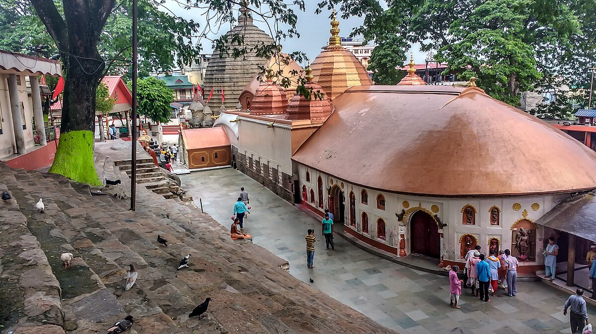

Dwarkadhish Temple


Dwarkadhish Temple
Shri Dwarkadhish Temple is a Hindu temple in Mathura, Uttar Pradesh, India. In this historic temple, Krishna is worshipped in his Dwarkanath or Dwarkadhish form along with his feminine counterpart goddess Radha in the form of Radharani.[2] The temple belongs to Pushtimarg tradition.
The current structure of temple was built up by Seth Gokul Das Parikh, the treasurer of then Gwalior State (Scindia) in 1814, with approval and donation from Shrimant Daulatrao Scindia, Maharajah of Gwalior.[1] Gokuldas was a devotee of the third Gaddi of the Pushtimarg whose seat is the Dwarkadhish temple in Kankroli, Rajasthan.
he Dwarkadhish temple, also known as the Jagat Mandir and occasionally spelled Dwarakadheesh, is a Hindu temple dedicated to Krishna, who is worshiped in the temple by the name Dwarkadhish (Dvārakādhīśa), or 'King of Dwarka'. The temple is located at Dwarka city of Gujarat, India, which is one of the destinations of Char Dham, a Hindu pilgrimage circuit.
The main shrine of the five-storied building, supported by 72 pillars, is known as Jagat Mandir or Nija Mandir. Archaeological findings suggest the original temple was built in 200 BCE at the earliest.[1][2][3] The temple was rebuilt and enlarged in the 15th–16th century.
The temple became part of the Char Dham pilgrimage considered sacred by Hindus in India. Adi Shankara, the 8th century Hindu theologian and philosopher, visited the shrine. The other three being comprising Rameswaram, Badrinath and Puri. Even today a memorial within the temple is dedicated to his visit. Dwarakadheesh is the 98th Divya Desam of Vishnu on the subcontinent, glorified in the Divya Prabandha sacred texts.
The temple is at an elevation of 12.19 metres (40.0 ft) above mean sea-level. It faces west. The temple layout consists of a garbhagriha (Nijamandira or Harigraha) and an antarala (an antechamber).[6] The original structure was destroyed by Mahmud Begada in 1473. The existing temple is dated to 16th century.
Legend
As per Hindu legend, Dwarka was built on a piece of land by Krishna that was reclaimed from the sea. According to the Mahabharata, the sage Durvasa once visited Krishna and his wife Rukmini. The sage wished that the pair took him to their palace, demanding that they pull his chariot like horses. The pair agreed and started to carry the sage, even as the latter struck Rukmini when she fell.[7] After some distance, according to local tradition, Rukmini got tired and she requested some water from Krishna. Krishna dug a hole with his powers that brought in river Ganga to the place.
Durvasa was furious and cursed Rukmini to remain in the place. The temple where Rukmini's shrine is found, is believed to be the place where she stood.[8] In the epic, finding no fault with the divine couple, Durvasa blessed Krishna with invincibility everywhere except the soles of his feet, and declared that Rukmini would be the foremost of the deity's spouses and would be his eternal companion in the next world as well.
History
The town of Dwarka in Gujarat has a history that dates back centuries, and mentioned in the Mahabharata epic as the Dwaraka kingdom. Situated on the banks of river Gomti, the town is described in legend as the capital of Krishna.
Evidence such as a stone block with script, the way the stones were dressed showing that dowels had been used, and an examination of anchors found on the site suggest that the harbour site dates only to historical times, with some of the underwater structure being late Medieval. Coastal erosion was probably the cause of the destruction of what was an ancient port.
In the fifteenth century the Raja of Dwarka was a Vadhel named Bhim who also ruled the local Vagher pirates. Once a maulana named Mahmud Samarqandi was undergoing a sea voyage when storm caused his vessel to go towards the coast of Dwarka. There the ship was attacked by Vagher pirates who plundered the ship, kidnapped his women, and left Mahmud and his sons adrift. Mahmud Samarqandi brought this matter to Sultan Mahmud at his court in Mustafabad.
Thus the sultan decide to capture Dwarka and in 1473 began marching towards the city. The Raja of Dwarka Bhim and his Rajputs fled the city to the island fortress of Bet, allowing Mahmud Begada to plunder Dwarka, destroy buildings and the Dwarkadhish temple and destroy its idol.[11][12][13][14] However according to a Rangarajan, citing a Gujarati article by Jayantilal Thaker, the Veghars "did their utmost to defend" the temple.
The current image of Dvārakādhīśa was installed by Aniruddhaśrama Śaṅkarācārya in 1559.
Structure
The temple has an east–west length of 29 m and north–south width of 23 m. The temple is constructed of limestone and has intricate carvings.
It is a five storied edifice built over 72 pillars (sandstone temple with 60 pillars is also mentioned).[17][18] There are two important entrances to the temple, one is the main entry door which is called the Moksha Dvara (meaning "Door to Salvation") and the exit door which is known as the Svarga Dvara (meaning: "Gate to Heaven").[citation needed] Outside this doorway are 56 steps that leads to the Gomati River.
The temple spire rises to a height of 78 metres (256 ft).[citation needed] A flag, hoisted over the spire, shows the sun and moon, which is believed to indicate that Krishna would be there until the sun and moon exist on Earth.[20] The flag, triangular in shape, is 50 feet (15 m) in length. This flag is changed four times a day with a new one and devotees pay a huge sum of money to hoist it by purchasing a new flag. The money received on this account is credited to the trust fund of the temple to meet the operation and maintenance expenses of the temple.
Religious importance
Since this site is associated with the ancient city of Dvārakā and the Vedic era Krishna of Mahabharata, it is an important place of pilgrimage for Hindus. It is one of three main pilgrimage sites related to "Krishna" circuit, namely 48 kos parikrama of Kurukshetra in Haryana state, Braj Parikarma in Mathura of Uttar Pradesh state and Dwarka Parikrama (Dwarkadish Yatra) at Dwarkadhish Temple in Gujarat state.
Though the origins are not clearly known, the Advaita school of Hinduism established by Adi Shankara, who created Hindu monastic institutions across India, attributes the origin of Char Dham to the seer.[21] The four monasteries are located across the four corners of India and their attendant temples are Badrinath Temple at Badrinath in the North, Jagannath Temple at Puri in the East, Dwarakadhish Temple at Dwarka in the West and Ramanathaswamy Temple at Rameswaram in the South.
Though ideologically the temples are divided between the sects of Hinduism, namely Shaivism and Vaishnavism, the Char Dham pilgrimage is an all Hindu affair.[22] The journey across the four cardinal points in India is considered sacred by Hindus who aspire to visit these temples once in their lifetime.[23] Traditionally the trip starts are the eastern end from Puri, proceeding in clockwise direction in a manner typically followed for circumambulation in Hindu temples.